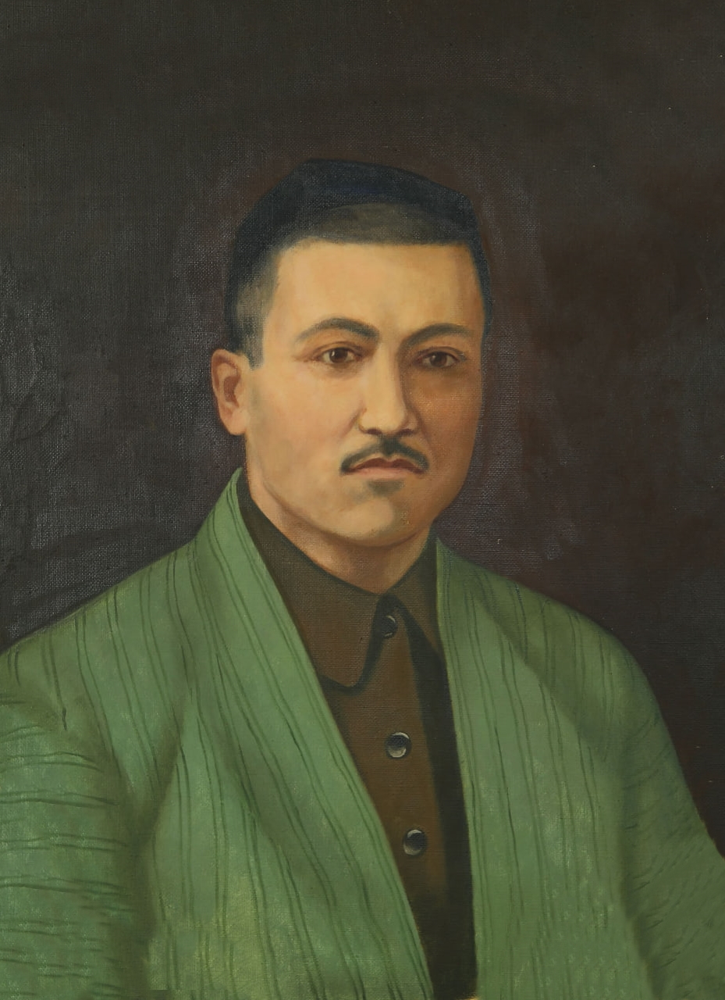
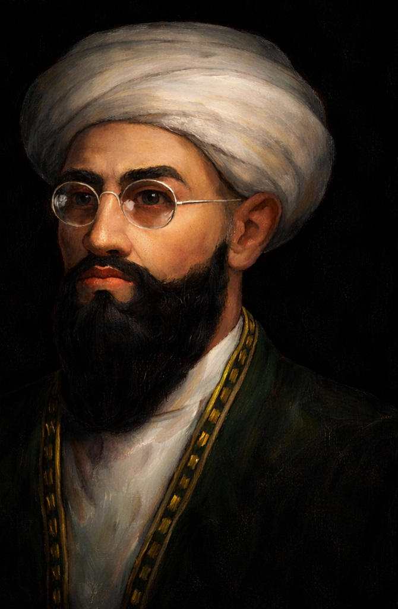
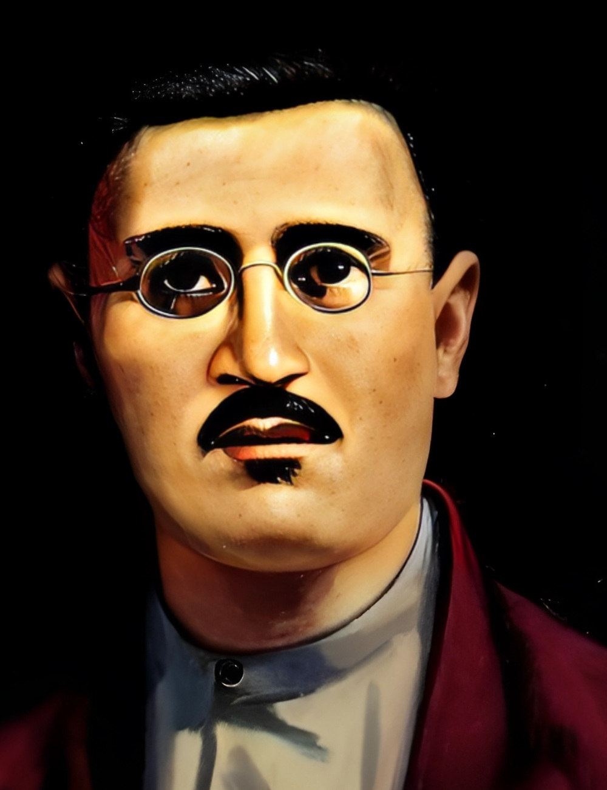
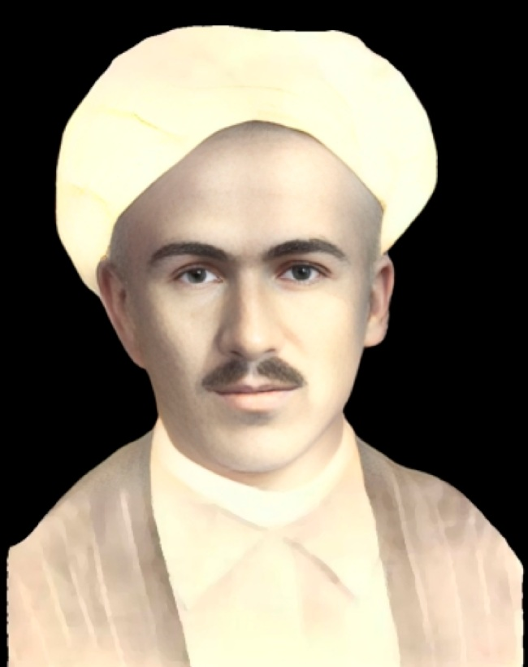

«Xotiralarim» (Toshkent jadidchilik harakati tarixi)
Munavvarqori qamoqda so'roq qilinayotgan davrda yozgan va Toshkentdagi ilk usuli jadid maktablari, teatr, jamiyatlar faoliyatini batafsil bayon qilgan xotirasi.

«Otam haqida» (Abdulla Qodiriy hayoti)
Buyuk adib Abdulla Qodiriyning o'g'li Habibulla Qodiriyning otasi hayoti, ijodiy jarayoni, do'stlari (Cho'lpon, Fitrat) bilan munosabatlari haqidagi eng to'liq xotira kitobi.

«Esdaliklar» (Buxoroda jadidchilik)
Buxoro amirligi davridagi qoloqlik, madrasa tizimi, yosh buxoroliklar harakatining vujudga kelishi va amir zulmiga qarshi kurash tarixi.

«Xotiralar» (Turkiston mustaqillik kurashi)
Turkiston Muxtoriyati hukumatida ishlagan, Behbudiy, Mustafo Cho'qay va Munavvarqori bilan bevosita muloqotda bo'lgan siyosatchining jahon miqyosidagi memuari.

XotiraCho'lpon bilan o'tgan oydin tunlar
Cho'lponning teatr, she'riyat va adabiy to'garaklardagi faoliyati, suhbatlari haqida samimiy xotiralar to'plami.
To'liq matn
XotiraVadud Mahmud xotiralari: Samarqand adabiy muhiti
Samarqand jadidlari, Behbudiy xonadonidagi uchrashuvlar va milliy matbuot sahifalarining yaratilish tarixi.
To'liq matn